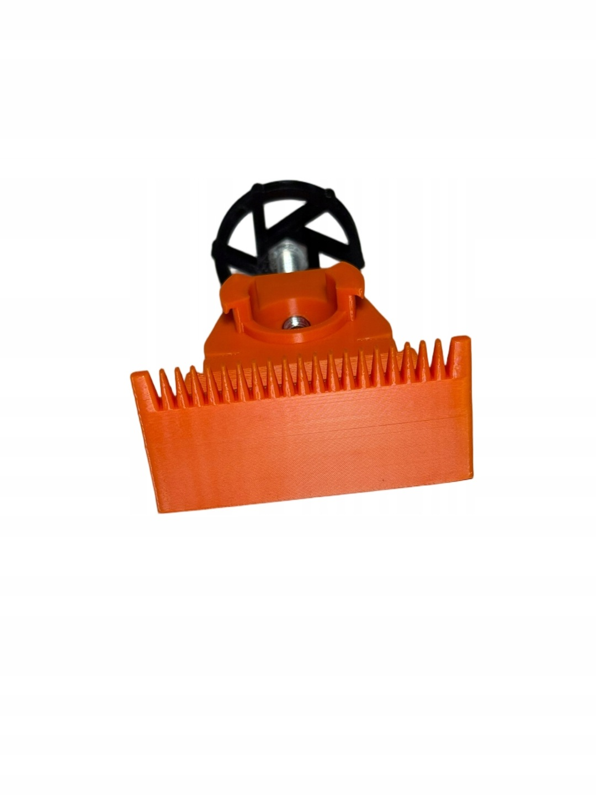
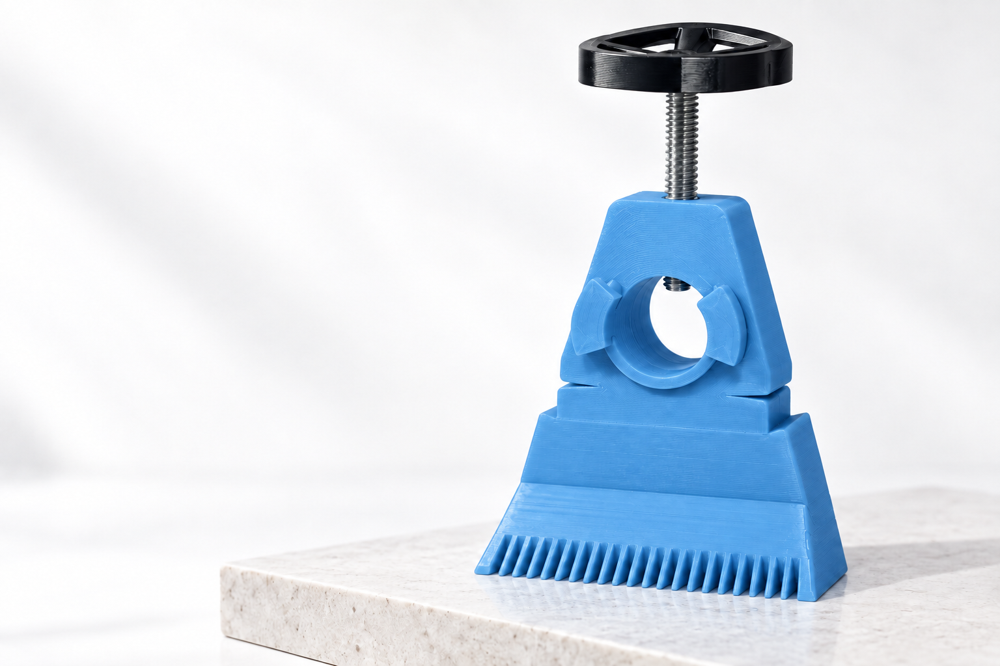
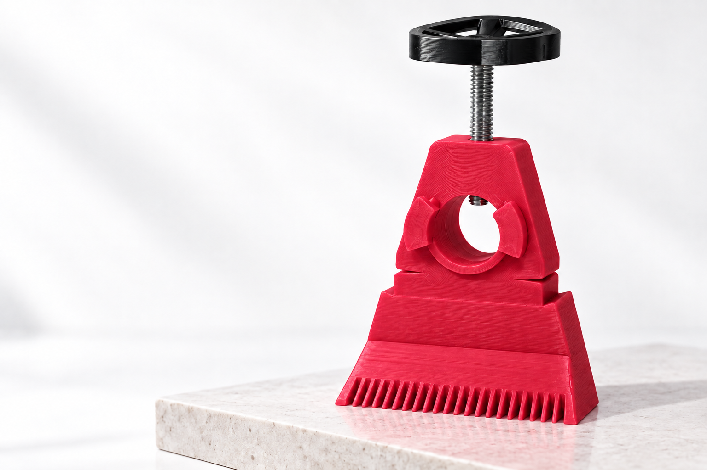
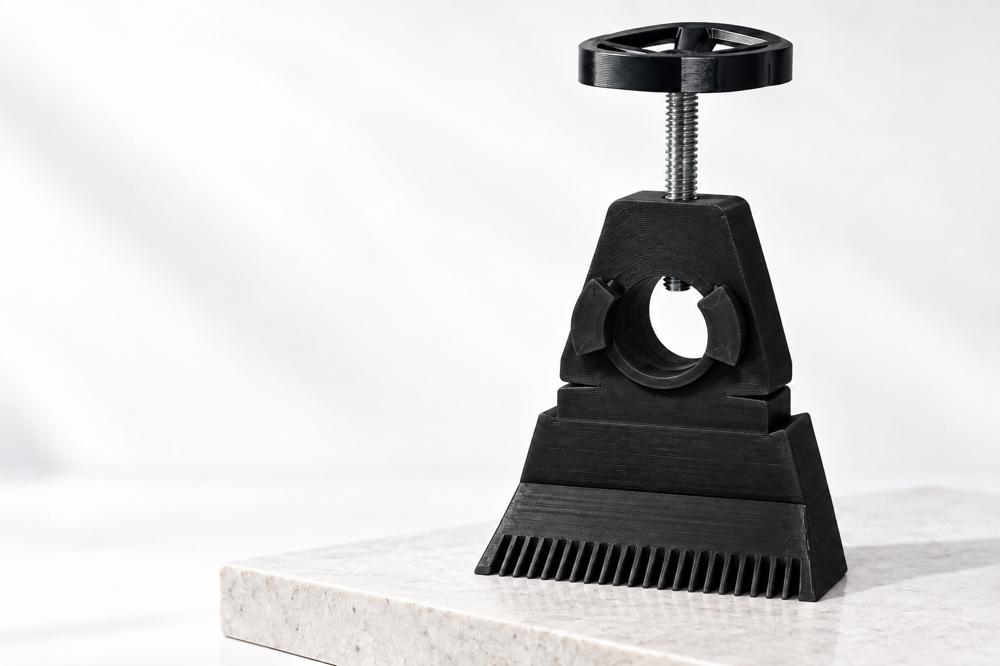

Tools / Orange ABS
Masonry line holder
For paving and brickwork. Fits rods up to 24 mm.
The collection / Products & possibilities
Useful objects, thoughtfully made. Discover our masonry line holder and explore ideas for your next project.




Masonry line holder
The same considered design.
A finish that feels like you.
Green · #00AE42 · Studio
Color preview. Actual printed colors may vary.
Explore by category
3 items

Tools / Orange ABS
For paving and brickwork. Fits rods up to 24 mm.
Finishes / Color study
A new color. A whole new character.
Custom / Project concept
Something useful. Something entirely yours.
No items match those filters. Try another search.
The masonry line holder is our featured product. Finish palette and custom-project cards are design studies. See Allegro for current pricing and availability.